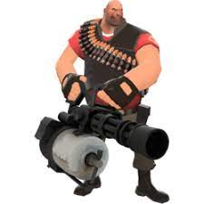

Heavy de Team Fortress 2


Minigun
Un Sandvich es un elemento de recuperación que el Heavy puede consumir para restaurar su salud. Es uno de los elementos más icónicos del juego.
Una Minigun es un tipo de ametralladora que dispara balas a alta velocidad. En Team Fortress 2, la Minigun es el arma principal del Heavy.
El Heavy es un personaje muy querido de Team Fortress 2. Aquí hay una imagen de él y un vídeo de fondo de uno de sus momentos icónicos.